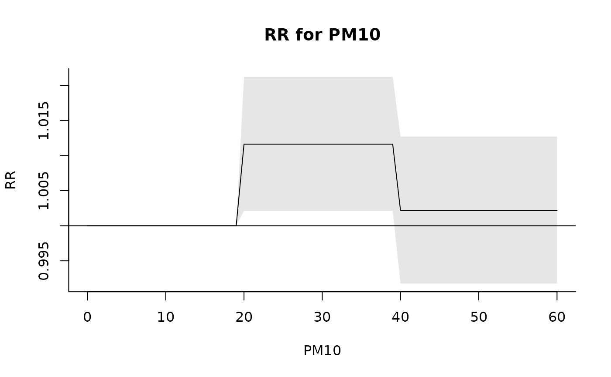
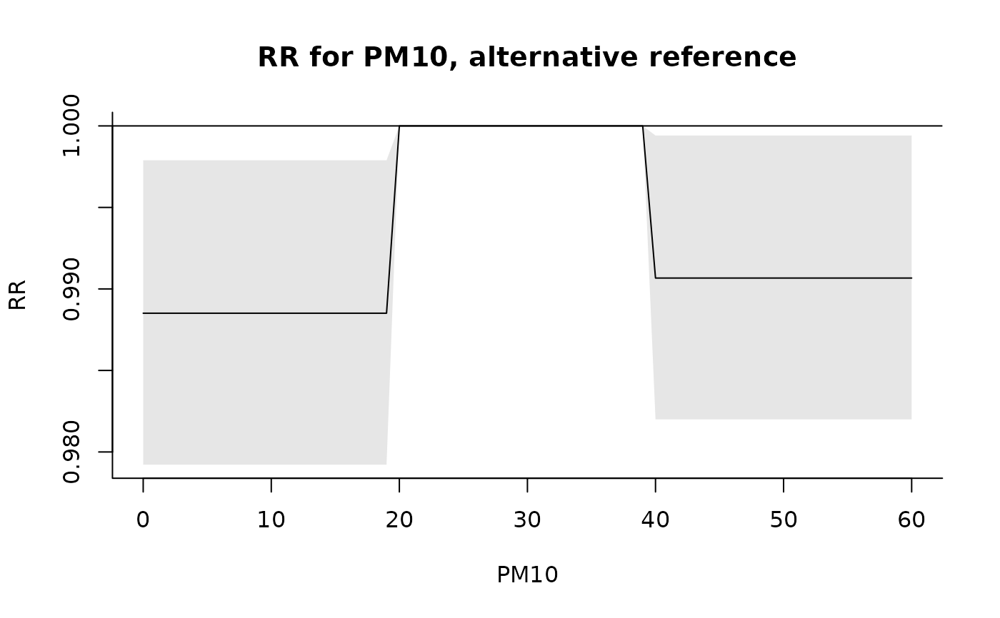
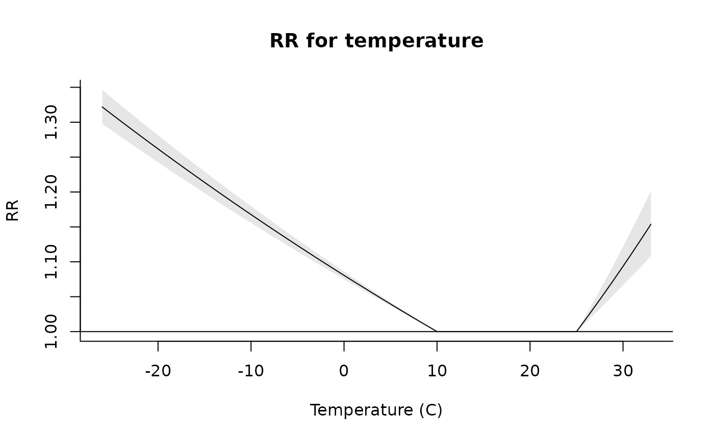
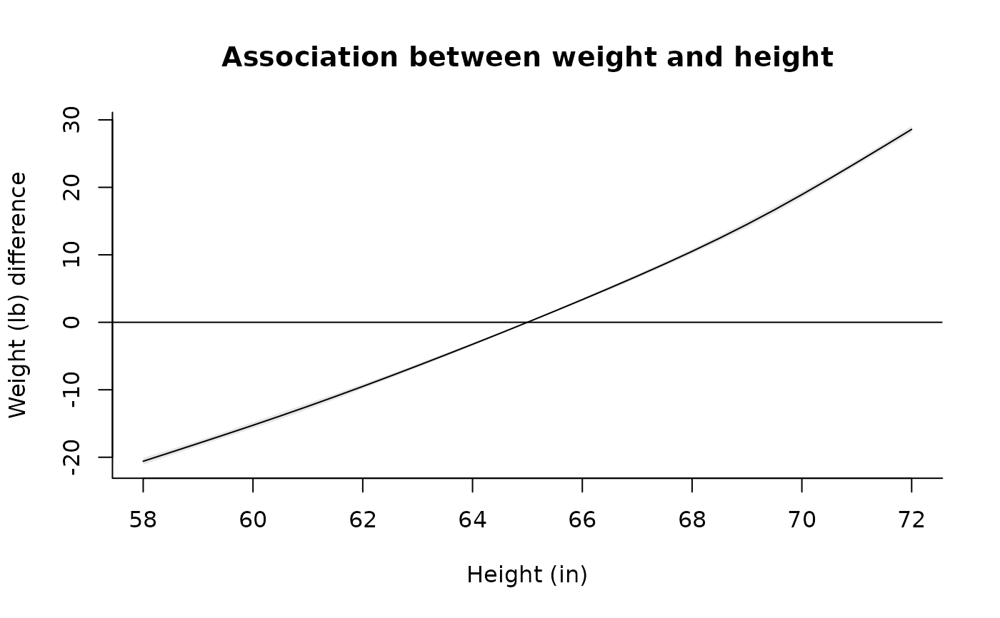

onebasis.RdThe function generates the basis matrix for a predictor vector. The function operates as a wrapper to existing or user-defined functions. Amongst other options, main choices include splines, polynomials, strata and linear threshold functions.
onebasis(x, fun="ns", ...)
# S3 method for class 'onebasis'
summary(object, ...)The function onebasis is a wrapper to existing functions which are called internally to produce different types of basis matrices in a pre-defined format. Its main use in the package dlnm is to be called by crossbasis to generate cross-basis matrices for modelling bi-dimensional exposure-lag-response associations in distributed lag linear (DLMs) and non-linear (DLNMs) models. However, it can be used also for simplifying the modelling and plotting of uni-dimensional exposure-response relationships.
The function to be called is chosen through the argument fun. Standard choices are:
"ns" and "bs": natural cubic B-splines or B-splines of various degree. Performed through a call to functions ns or bs from package splines. Arguments passed through ... may include df, knots, intercept, and Boundary.knots.
"ps" and "cr": penalized splines with different parameterizations and penalties. Performed through a call to functions ps or cr. Arguments passed through ... may include df, knots, degree, intercept, fx, S, and diff.
"poly": polynomials functions. Performed through a call to the internal function poly (be aware that this is different from poly in the package stats). Arguments passed through ... may include degree, scale and intercept.
"strata": indicator variables defining strata. Performed through a call to the function strata. Arguments passed through ... may include df, breaks, ref and intercept.
"thr": high, low or double linear threshold functions. Performed through a call to the function thr. Arguments passed through ... may include thr.value, side and intercept.
"integer": indicator variables for each integer value. Performed through a call to the internal function integer (be aware that this is different from the function integer in the package base). Arguments passed through ... may include intercept.
"lin": linear functions. Performed through a call to the internal function lin. Arguments passed through ... may include intercept.
The help pages of the called functions provides additional information. In particular, the option "lin" and "integer" are usually applied for defining constrained and unconstrained DLMs.
In addition, any other existing or user-defined function can be potentially called through onebasis. The function should have a first argument x defining the vector to be transformed. It also should return a vector or matrix of transformed variables, with attributes including the arguments of the function itself which define the transformations univocally.
A matrix object of class "onebasis" which can be included in a model formula in order to estimate the association. It contains the attributes fun, range (range of the original vector of observations) and additional attributes specific to the chosen function. The method summary.onebasis returns a summary of the basis matrix and the related attributes.
Gasparrini A. Distributed lag linear and non-linear models in R: the package dlnm. Journal of Statistical Software. 2011;43(8):1-20. [freely available here].
This function offers a wide range of options about modelling the shape of the exposure-response relationships, also simplifying or extending the use of existing functions. The function crosspred can be called on objects of class "onebasis" in order to obtain predictions and plotting of such uni-dimensional associations. If more than one variable is transformed through onebasis in the same model, different names must be specified.
Before version 2.2.0 of dlnm, onebasis could include a cen argument for centering the basis. This step is now moved to the prediction stage, with a cen argument in crosspred or crossreduce (see the related help pages). For backward compatibility, the use of cen in onebasis is still allowed (with a warning), but may be discontinued in the future.
This function has replaced the two old functions mkbasis and mklagbasis since version 1.5.0.
Meaningless combinations of arguments could lead to collinear variables, with identifiability problems in the model. The function onebasis does not perform many checks on the arguments provided. The user is expected to provide valid arguments.
crossbasis to generate cross-basis matrices. crosspred to obtain predictions after model fitting. The method function plot to plot several type of graphs.
See dlnm-package for an introduction to the package and for links to package vignettes providing more detailed information.
### a polynomial transformation of a simple vector
onebasis(1:5, "poly", degree=3)
#> b1 b2 b3
#> [1,] 0.2 0.04 0.008
#> [2,] 0.4 0.16 0.064
#> [3,] 0.6 0.36 0.216
#> [4,] 0.8 0.64 0.512
#> [5,] 1.0 1.00 1.000
#> attr(,"fun")
#> [1] "poly"
#> attr(,"degree")
#> [1] 3
#> attr(,"scale")
#> [1] 5
#> attr(,"intercept")
#> [1] FALSE
#> attr(,"class")
#> [1] "onebasis" "matrix"
#> attr(,"range")
#> [1] 1 5
### a low linear threshold parameterization, with and without intercept
onebasis(1:5, "thr", thr=3, side="l")
#> b1
#> [1,] 2
#> [2,] 1
#> [3,] 0
#> [4,] 0
#> [5,] 0
#> attr(,"fun")
#> [1] "thr"
#> attr(,"thr.value")
#> [1] 3
#> attr(,"side")
#> [1] "l"
#> attr(,"intercept")
#> [1] FALSE
#> attr(,"class")
#> [1] "onebasis" "matrix"
#> attr(,"range")
#> [1] 1 5
onebasis(1:5, "thr", thr=3, side="l", intercept=TRUE)
#> b1 b2
#> [1,] 1 2
#> [2,] 1 1
#> [3,] 1 0
#> [4,] 1 0
#> [5,] 1 0
#> attr(,"fun")
#> [1] "thr"
#> attr(,"thr.value")
#> [1] 3
#> attr(,"side")
#> [1] "l"
#> attr(,"intercept")
#> [1] TRUE
#> attr(,"class")
#> [1] "onebasis" "matrix"
#> attr(,"range")
#> [1] 1 5
### relationship between PM10 and mortality estimated by a step function
b <- onebasis(chicagoNMMAPS$pm10, "strata", breaks=c(20,40))
summary(b)
#> BASIS FUNCTION
#> observations: 5114
#> range: -3.049835 356.1768
#> df: 2
#> fun: strata
#> df: 2
#> breaks: 20 40
#> ref: 1
#> intercept: FALSE
model <- glm(death ~ b, family=quasipoisson(), chicagoNMMAPS)
pred <- crosspred(b, model, at=0:60)
plot(pred, xlab="PM10", ylab="RR", main="RR for PM10")

### changing the reference in prediction (alternative to argument ref in strata)
pred <- crosspred(b, model, cen=30, at=0:60)
plot(pred, xlab="PM10", ylab="RR", main="RR for PM10, alternative reference")

### relationship between temperature and mortality: double threshold
b <- onebasis(chicagoNMMAPS$temp, "thr", thr=c(10,25))
summary(b)
#> BASIS FUNCTION
#> observations: 5114
#> range: -26.66667 33.33333
#> df: 2
#> fun: thr
#> thr.value: 10 25
#> side: d
#> intercept: FALSE
model <- glm(death ~ b, family=quasipoisson(), chicagoNMMAPS)
pred <- crosspred(b, model, by=1)
plot(pred, xlab="Temperature (C)", ylab="RR", main="RR for temperature")

### extending the example for the 'ns' function in package splines
b <- onebasis(women$height, df=5)
summary(b)
#> BASIS FUNCTION
#> observations: 15
#> range: 58 72
#> df: 5
#> fun: ns
#> knots: 60.8 63.6 66.4 69.2
#> intercept: FALSE
#> Boundary.knots: 58 72
model <- lm(weight ~ b, data=women)
pred <- crosspred(b, model, cen=65)
plot(pred, xlab="Height (in)", ylab="Weight (lb) difference",
main="Association between weight and height")

### use with a user-defined function with proper attributes
mylog <- function(x, scale=min(x, na.rm=TRUE)) {
basis <- log(x-scale+1)
attributes(basis)$scale <- scale
return(basis)
}
mylog(-2:5)
#> [1] 0.0000000 0.6931472 1.0986123 1.3862944 1.6094379 1.7917595 1.9459101
#> [8] 2.0794415
#> attr(,"scale")
#> [1] -2
onebasis(-2:5,"mylog")
#> Error in get(fun, mode = "function", envir = envir): object 'mylog' of mode 'function' was not found